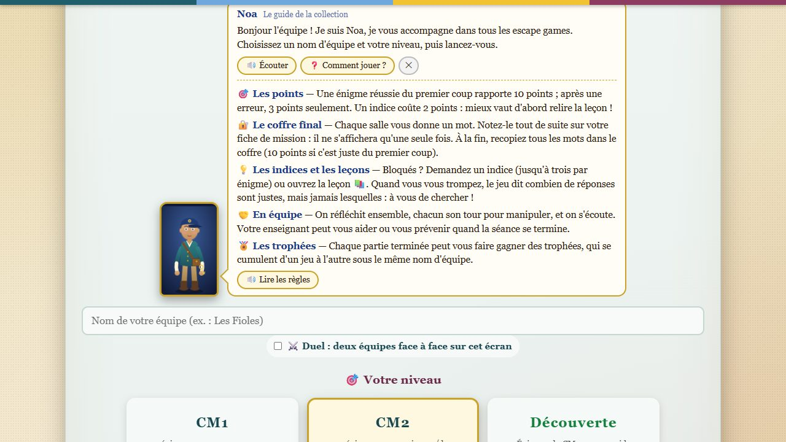
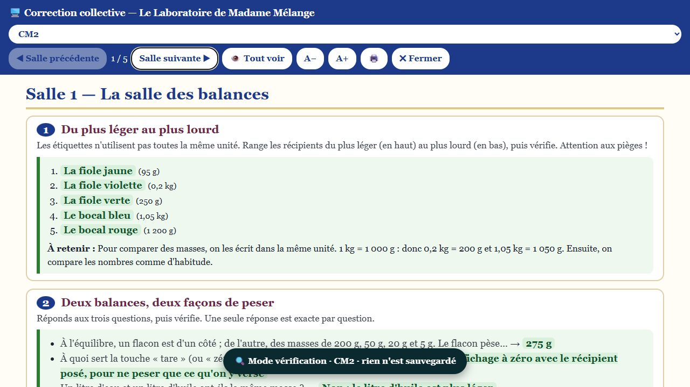
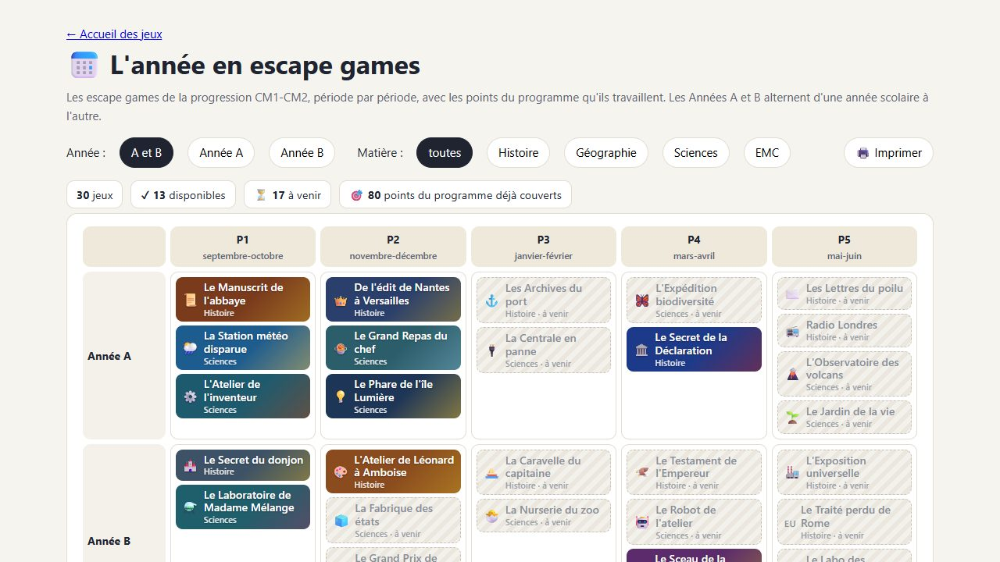

▶ Le diaporama11 diapositives, 10 à 15 minutes : constat de départ, principe du moteur commun, démonstration, ce qu'il faut pour se lancer. Notes de l'intervenant (touche N), version imprimable.
⏱ Le déroulé minutéUne présentation de 30 ou de 45 minutes, avec un temps de manipulation par les collègues, la préparation et un plan de première séance à remplir.
📊 Quelques chiffres (à jour avec le catalogue de l'année)
…jeux jouables
…jeux dans la progression
…matières
…compétences travaillées
Matières : …. Une compétence du programme par leçon de chaque jeu (comme dans le passeport) ; voir L'année en escape games.
🖼️ Captures d'écran









Les captures sont refaites à partir des vraies pages : node presentation/capturer.js.
🚀 Et ensuite ?
Les collègues qui veulent essayer trouveront tout dans le kit « adopter ce projet » (en ligne, tablettes, archive, mode classe, adapter une énigme) et les fiches de séquence. En cas de question : aide et dépannage.